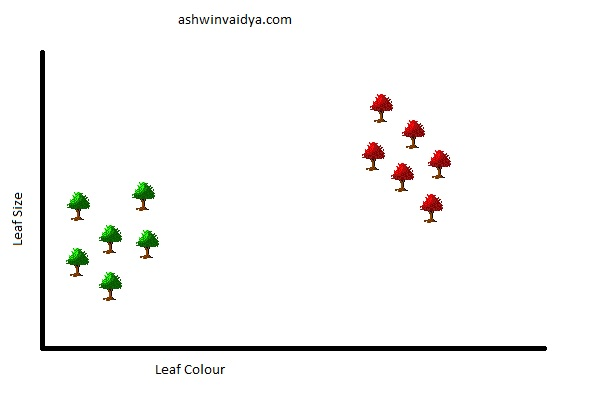
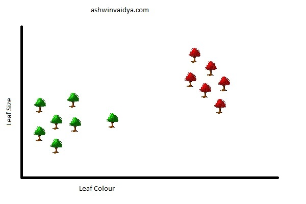
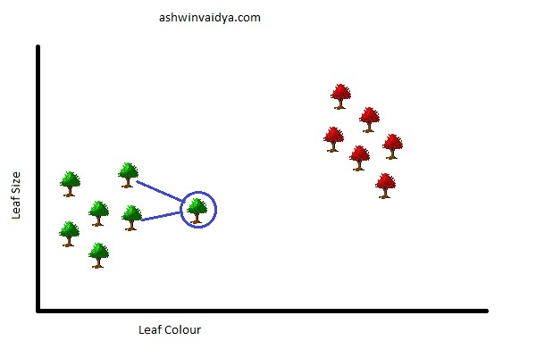
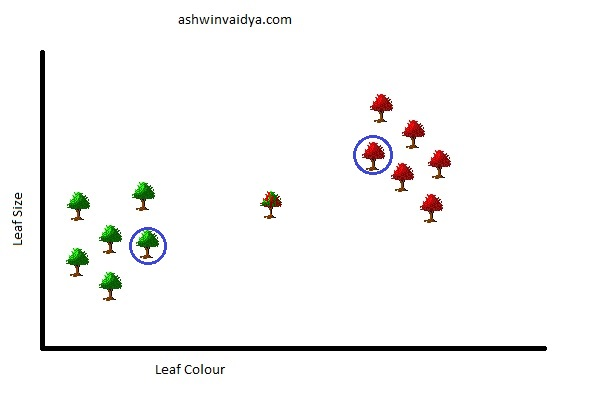
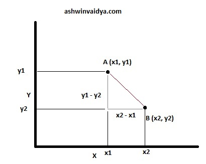
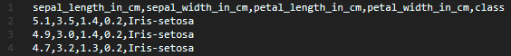

K Nearest Neighbors
Table of Contents
(The following uses a barebones example merely for the purpose of illustration)
Consider that you have two species of trees in your neighbourhood. You collect their leaf size, leaf colour, height and other details. Now you plot this data on a graph using only the leaf size and the leaf colour. Something like this:

You now spot a new tree in your neighbourhood. To decide the species to which it belongs, you add it to your plot.

How would you decide the species of this tree? Clearly, this new tree is closer to all the lower left ones. You can classify this with the others in the category.
But is comparing with all the lower left trees necessary? Clearly not. You can consider just two nearest trees.

This is essentially what K-Nearest Neighbors (KNN) is. Here k = 2. KNNs can be used for both classification (Identifying categories) and regression (Predicting continuous values) tasks. For this post, I am going to focus on classification. Further, KNNs are mostly used for classification purposes.
Before I explain further, here is another detail. What if the new tree was located here in the graph.

The two nearest neighbours are conflicting as they belong to two different species. Hence, as a rule of thumb, you should take k as an odd number. And suppose the number of classes (here species) is three then you should take k = 5.
The distances between the points are calculated using the Euclidean distance formula.
Consider the following two points. The shortest distance between the points is the length of the straight line joining the two.
From the following figure, the distance can be calculated using the Pythagorean theorem.
$$\sqrt{(x_2 - x_1)^2 + (y_1 - y_2)^2}$$

This equation can be extended to multi-dimensional space as follows:
$$\sqrt{\sum_{i = 1}^{n}(a_i - b_i)^2}$$
K Nearest Neighbors essentially stores all the training data. The unknown class is determined based on the closet training examples. Hence, it comes in the category of Lazy Learner. This can be compared to Eager Learners (Linear Regression, Decision Tree) which builds a model to predict the class rather than remembering the training data.
Implementation using sklearn
Now that we have the theory aside, let's quickly implement it using scikit-learn. For this example, I have taken the Iris dataset and stored it in data.csv file.

Iris Dataset